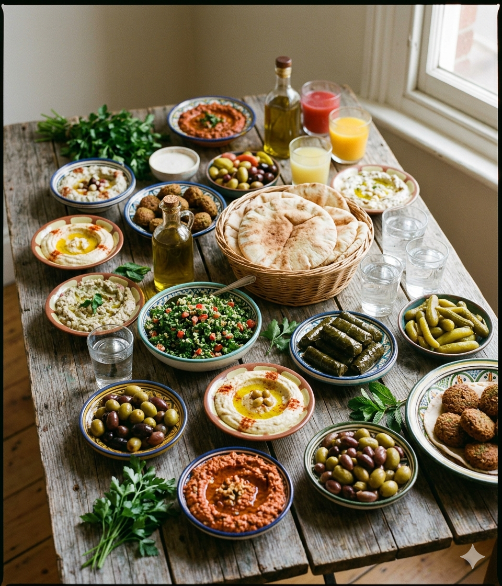
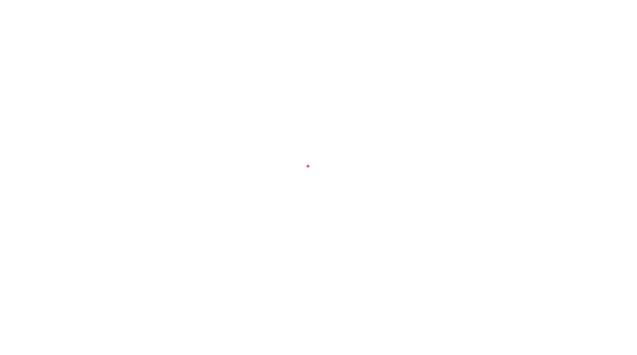
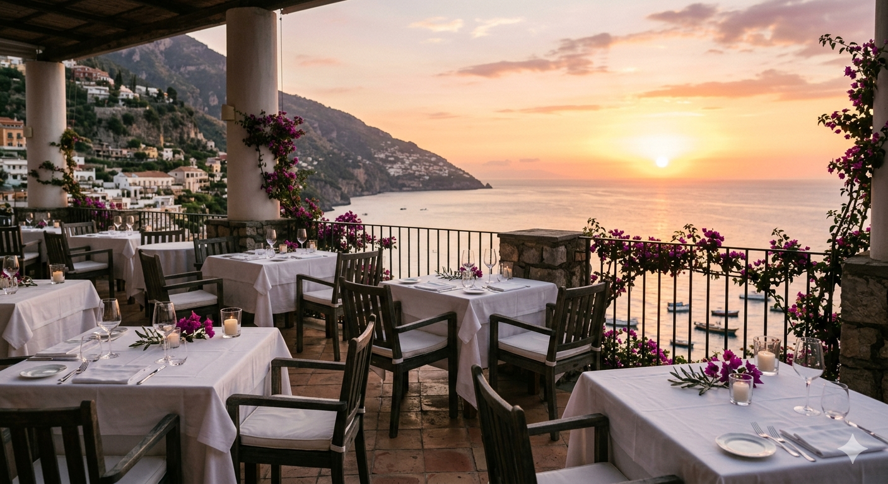
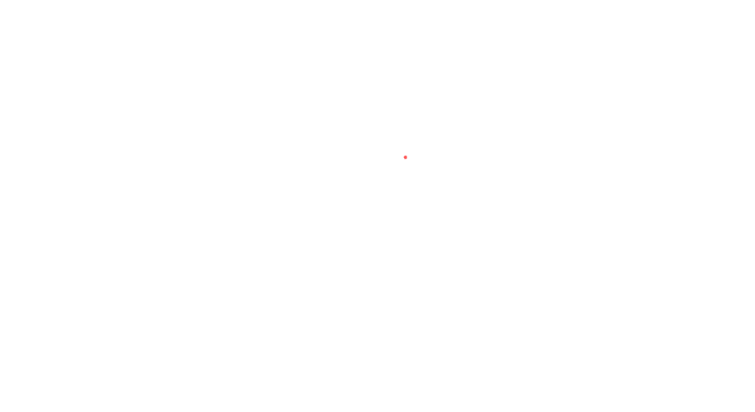

Guida operativa per accogliere atleti, tecnici e turisti da 26 Paesi del Mediterraneo. Pratiche halal-friendly, opzioni veg, formazione del personale e molto altro.
Sei un ristoratore, barista, pasticcere o albergatore di Taranto? Questa guida ti prepara ad accogliere al meglio gli ospiti internazionali dei Giochi del Mediterraneo.
Non è una certificazione religiosa: è un insieme di pratiche consapevoli per accogliere con rispetto i tuoi ospiti.

Evitare prosciutto, pancetta, strutto, gelatina di maiale. Se un ingrediente è incerto, indicarlo nel menu o chiedere al fornitore.
Vietato anche per sfumare o come bagna per dolci. Sostituire con limone, aceto, salsa di soia o birra analcolica.
Evitare strutto, vino da cucina, gelatina animale. Usare margarina vegetale, agar-agar, latte di mandorla tarantino.
Preferire ricotta o pampanella locale. Indicare la presenza di caglio animale aiuta il cliente a scegliere con fiducia.
Il pesce è generalmente accettato. I frutti di mare vanno segnalati separatamente per le diverse interpretazioni culturali.
Se non disponibili da macellerie certificate, puntare su pesce, legumi e verdure: scelta sicura e valorizzante per la cucina pugliese.
Non basta usare gli ingredienti giusti: è fondamentale che non entrino in contatto con ingredienti proibiti. La fiducia si guadagna anche attraverso la cura del processo.
Coltelli, taglieri e mestoli dedicati ai piatti halal, vegetariani e vegani. Se condivisi, lavaggio accurato prima dell'uso.
L'olio di frittura non va condiviso tra cibi halal/vegani e cibi non conformi. Mantenere vasche o padelle separate.
Piastre e padelle separate per la cottura halal e vegana. Un'etichetta colorata sul manico è sufficiente per organizzarsi.
Comunicare chiaramente le pratiche adottate, senza esagerazioni e senza false promesse. La fiducia si costruisce con onestà.
Le opzioni veg sono anche la risposta più semplice per chi non trova carne halal disponibile. La cucina pugliese è straordinariamente ricca in questo senso.

Fave e cicorie, purè di ceci, pasta e fagioli, orecchiette alle cime di rapa. Sono pasti a tutti gli effetti: inserirli come piatti unici nel menu.
Cicerchie, lenticchie, farro e grano duro: proteine vegetali con grande appeal internazionale.
Eccellenza locale. Valorizzarlo nelle bevande e nei dessert è anche marketing territoriale di grande impatto.
Tofu, tempeh e seitan si abbinano bene agli ingredienti locali. Il mosto cotto e l'agar-agar permettono dessert vegani tradizionali.
Per halal e vegano: no strutto, no alcol, no gelatina animale. La pasticceria pugliese ha già tutto il necessario per adattarsi.
Le abitudini dei pasti degli ospiti mediterranei differiscono dalla tradizione italiana. Adattarsi è semplice e porta vantaggi concreti.
Gli orari serali rispondono ad abitudini culturali consolidate, non a cene post-evento.

Un bar attrezzato con una carta analcolica di qualità attrae una clientela internazionale numerosa e fidelizzata. Non trattarle come "opzione di serie B".
Tipiche della tradizione mediterranea, ad alto valore di comfort. Anche tè al gelsomino o all'ibisco sono apprezzatissimi.
Abbinati a spezie locali: zenzero, cannella, cardamomo. Nessun additivo alcolico.
Virgin mojito, spritz analcolico, mocktail a base di agrumi e mandorle. Presentarli con cura nella carta.
Acque infuse con cetriolo, menta, agrumi o frutta di stagione. Economiche, eleganti e universalmente apprezzate.
Eccellenza locale. Servirlo freddo, caldo o come base di bevande è anche marketing territoriale.
Offrire latte di soia, mandorla o avena come alternative. Il caffè espresso è già di per sé halal e vegan.
Un cameriere capace di rispondere con sicurezza alle domande alimentari vale più di qualsiasi certificazione appesa al muro.

Saper riconoscere gli ingredienti critici (maiale, alcol, gelatina, caglio) nei piatti del proprio menu.
"This dish contains no pork." · "This is alcohol-free." · "I'll check with the kitchen." · "This is vegan."
Se non si è certi: "Verifico con la cucina" è la risposta corretta. Mai improvvisare.
Accogliere le esigenze alimentari è un gesto di ospitalità, non un ostacolo. Sorriso e disponibilità sono il primo strumento.
"Il nostro personale è formato sulle pratiche alimentari halal e vegane."
"La nostra cucina è attenta alle esigenze halal, vegetariane e vegane."
"Offriamo piatti senza alcol e senza derivati del maiale su richiesta."
"Siamo un ristorante halal certificato." — Non si tratta di certificazione religiosa ufficiale.
"Tutti i nostri piatti sono halal." — A meno di approvvigionamento interamente certificato.
L'Unione Regionale Cuochi Puglia (FIC) offre corsi gratuiti da 90 minuti, aperti a tutto il settore HO.RE.CA.
Linee guida halal-friendly, gestione del menu e comunicazione con l'ospite internazionale.
Ingredienti da evitare, sostituti halal e vegani, valorizzazione delle tradizioni dolciarie pugliesi.
Usa questa lista per verificare che il tuo locale sia pronto. Stampala, appendila in cucina, condividila con il tuo team.